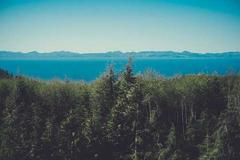

Abstraction at low flow
Updated 14 March 2026 · 9 minute read
A licence sets the volume a site may take and the flow below which it may take nothing. The second number decides whether a mill runs in August, and it is the number most operators discover late.
Reading the hydrograph
Start with the gauge nearest your intake and take the mean of the lowest seven consecutive days in each of the last twenty years. Regulators write conditions against this figure, and a mill sized above it will stop most summers.

Take the gauge record before you buy. A site with two
dry summers in twenty years is a different business from one with nine.
What the condition looks like
Conditions are written as a pair: a maximum take and a hands-off flow. A common form allows 1.2 cubic metres a second while the river carries more than 0.9, and nothing below that. The wheel then works for about 300 days.